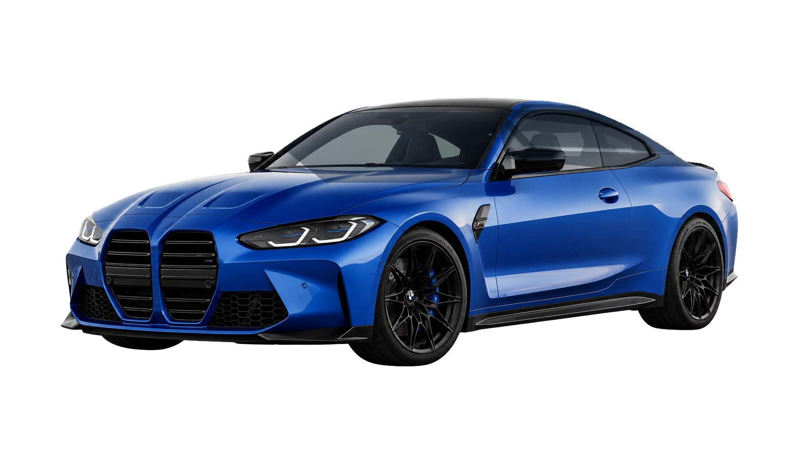
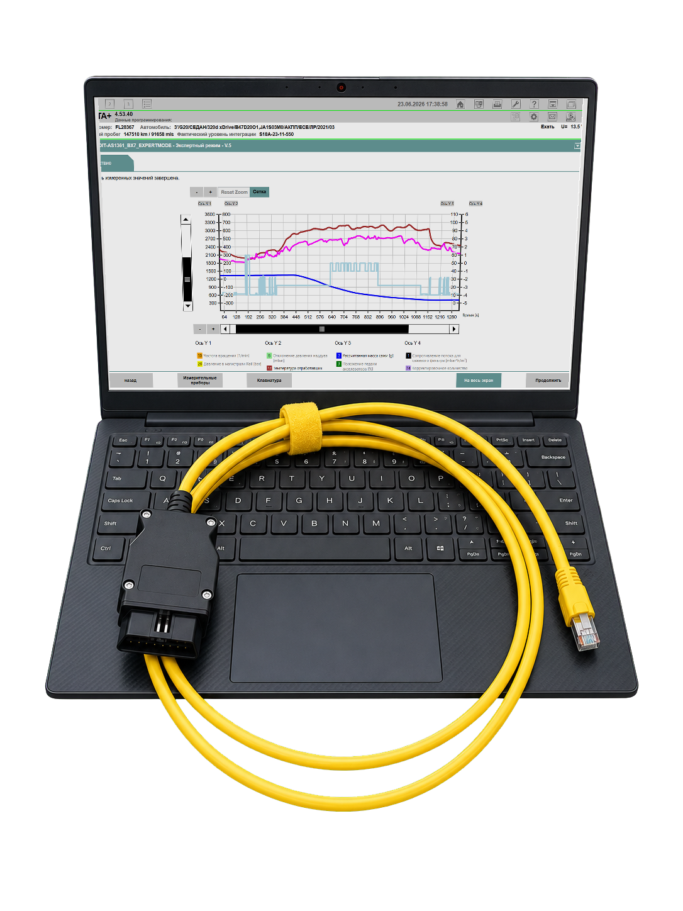
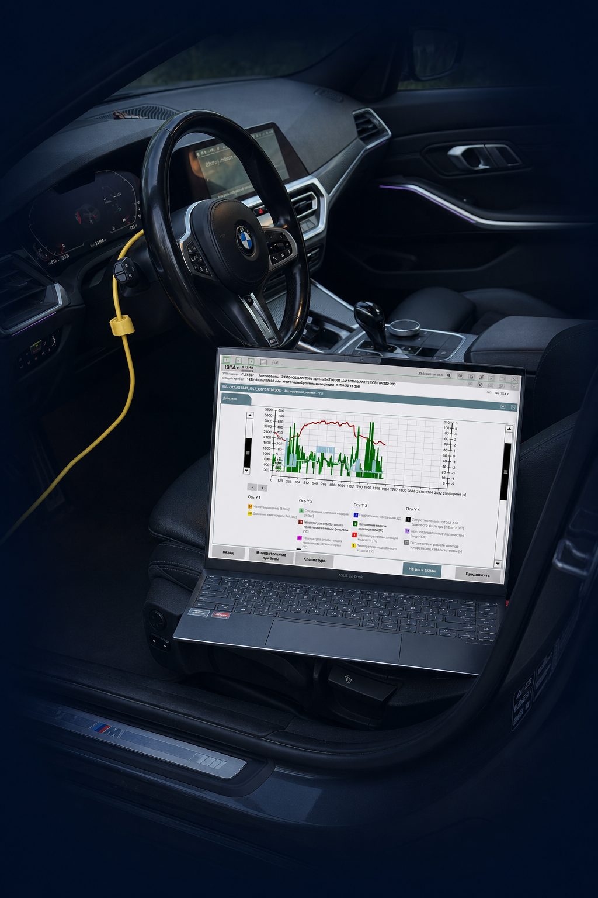
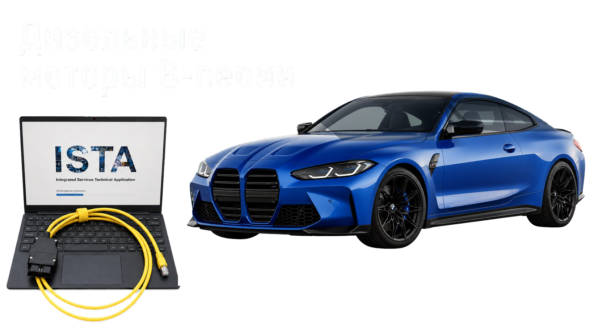

План проверки
ISTA не просто показывает список ошибок, а собирает их в диагностический маршрут. План проверки помогает понять последовательность действий и не прыгать хаотично между блоками.
Онлайн-курс
Integrated Service Technical Application
Практический курс по работе с дилерским программным обеспечением ISTA для диагностики автомобилей BMW.

В ISTA заложена логика, по которой автомобиль можно диагностировать как систему, а не как набор отдельных ошибок. В курсе показывается, как пользоваться заводскими инструментами BMW: планами проверок, тест-блоками и функциональными структурами. Такой подход помогает оценивать техническое состояние автомобиля и понимать, где причина неисправности, а где только её проявление.
ISTA не просто показывает список ошибок, а собирает их в диагностический маршрут. План проверки помогает понять последовательность действий и не прыгать хаотично между блоками.
Заводские сценарии проверки, которые ведут диагноста по логике производителя: от симптома и ошибки к условиям выполнения, измерениям, контрольным значениям и техническому выводу.
Работа не только по отдельным блокам управления, а по системам: воздух, топливо, EGR, DPF, SCR, питание, подача масла и другие узлы. Это помогает видеть связи между параметрами и неисправностями.

Режим эксперта ISTA
Режим эксперта позволяет смотреть работу автомобиля через графики: наддув, топливо, давление, температуру, сажевый фильтр, плавность работы и другие параметры. В курсе разбирается, как читать эти данные в связке, видеть отклонения и делать технический вывод.
Скриншоты показывают характер материала: заводские проверки, условия выполнения, справочное описание и параметры для анализа.
Для кого
Материал рассчитан на тех, кто уже понимает устройство автомобиля и хочет перейти от поверхностного чтения ошибок к нормальной диагностической работе.
Чтобы выходить в премиум-сегмент, оценивать техническое состояние BMW и давать клиенту технически обоснованный отчет, а не набор отдельных фотографий ошибок. Сможете не ограничиваться списком ошибок и общими фразами в отчете. Курс помогает смотреть BMW как систему: проверять параметры, понимать логику планов проверок и аргументировать выводы техническим языком.
Чтобы понимать свой автомобиль, меньше зависеть от сервиса и самостоятельно разбираться в диагностических вопросах без лишних поездок и напрасной замены деталей. Вы сможете спокойнее общаться с сервисом и понимать, когда вам предлагают нужную услугу, а когда с вас просто хотят заработать денег. Это особенно полезно, если хотите самостоятельно разбираться в состоянии мотора, экологии и связанных систем.
Чтобы усилить направление BMW, уйти от поверхностного чтения ошибок и освоить работу с оригинальной заводской диагностикой. Курс помогает перейти от универсального сканера к работе с заводской средой BMW. Это дает больше глубины в проверках, понятнее связывает ошибки с параметрами и помогает строить более уверенную диагностическую гипотезу.
Чтобы разобраться, как строится нормальная диагностика по заводским стандартам BMW: от симптома и ошибки к проверкам, параметрам и техническому выводу. Материал подойдет тем, кто уже знаком с устройством автомобиля и хочет понять, как производитель сам предлагает искать неисправности. Здесь акцент не на ремонте с нуля, а на логике проверки, анализе данных и техническом выводе.

Курс не делает человека профессиональным диагностом за несколько уроков. Профессионализм приходит через длительную практику. Здесь вы получаете фундамент: как работать с ISTA, как читать заводскую логику проверок и как отличать причину неисправности от следствия.
Программа
Программа выстроена от базовой ориентации в ISTA до функциональных структур, сервисных функций и анализа параметров в режиме эксперта. Каждый раздел показывает отдельный уровень работы с заводской диагностикой BMW.
В первом разделе разбирается базовая логика работы с ISTA: как ориентироваться в программе, смотреть блоки управления, читать ошибки, фильтровать информацию, работать с планом проверки и переходить от общей картины автомобиля к конкретным диагностическим действиям.
Раздел посвящён работе с заводской диагностической логикой BMW: функциональными структурами, тест-блоками, условиями проверок, параметрами и техническими выводами. Здесь разбирается, как ISTA ведёт диагноста по системам автомобиля и помогает связывать симптомы, параметры, датчики и исполнительные механизмы в одну понятную диагностическую картину.
Практическая работа с сервисными функциями ISTA: адаптации, активации, сбросы и корректировки, которые применяются при диагностике и обслуживании BMW. В разделе показано, где находятся нужные функции, в каких случаях они применяются и что важно понимать перед запуском процедуры.
Финальный раздел посвящён более глубокому анализу данных через режим эксперта. Здесь разбирается работа с графиками и связкой параметров: запуск, наддув, топливо, подача масла, сажевый фильтр, плавность работы и другие данные. Раздел нужен, чтобы видеть поведение системы в динамике и делать технический вывод.
Открытый пример
В видео показан открытый пример: универсальный сканер может некорректно подписать параметры, дать неверные ориентиры и привести к ошибочному выводу. Для BMW важна родная дилерская среда ISTA, где параметры, проверки и диагностическая логика связаны с заводской документацией.
Это не урок из закрытой программы и не повтор темы внутри курса. Это пример подачи материала: разбор показаний, проверка логики и объяснение, почему в диагностике BMW нельзя опираться только на название параметра, список ошибок или универсальный сканер.
Честные ограничения

Курс не подойдет тем, кто вообще не знаком с устройством автомобиля.
Курс не предполагает обучение кодированию, программированию и прошивкам BMW.
Курс не включает предоставление и установку ISTA, а также диагностический кабель. Для обучения используется разбор работы с программой и диагностической логикой.
Основная практическая база курса — дизельный BMW B47 и моторы B-серии: B37, B47, B57.
Примеры по бензиновым моторам B-серии в курсе есть, включая тест-блоки и режим эксперта, но их меньше, чем материалов по дизельным BMW.
Курс не обещает быстрый заработок без практики и технической базы.
Опытным диагностам часть материала может быть знакома, но курс может быть полезен как системный взгляд на заводскую логику ISTA.
Стартовая стоимость
Один тариф. Стартовая стоимость действует первые 3 дня — 25 000 ₽. После стартового периода цена повышается до 29 000 ₽ и держится 7 дней. Затем финальная стоимость курса — 34 000 ₽. Доступ к материалам предоставляется на 6 месяцев.